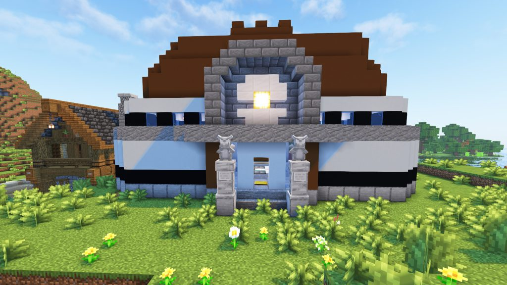
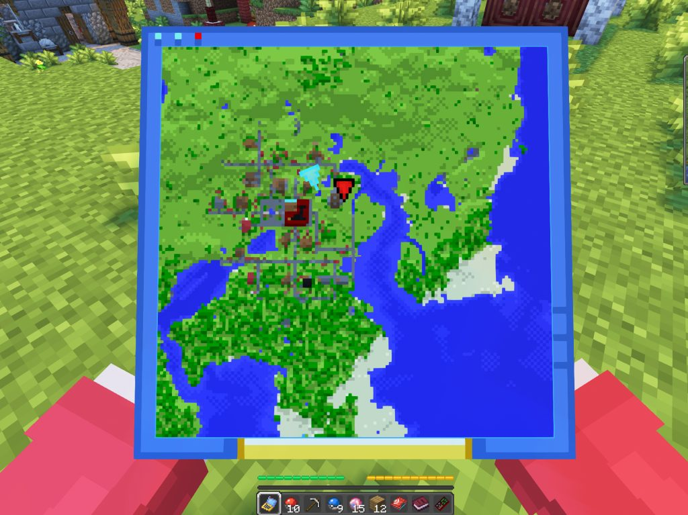

Cobbleverse 道馆联盟挑战玩法
全服共 48 座道馆，横跨关都到帕底亚九大地区。挑战馆主拿徽章、突破等级上限、击败冠军解锁新地区——这就是 Cobbleverse 的终极目标：成为宝可梦联盟冠军！
🏟️ 什么是宝可梦联盟？
Cobbleverse 的核心理念是 正作式的宝可梦联盟挑战：道馆建筑自然生成在主世界，馆主由 Radical Cobblemon Trainer 模组驱动，击败馆主后掉落 徽章 + TM 招式机，冠军还有特殊奖励。每个道馆都有对应属性的专属屋顶颜色，一眼就能认出是谁的地盘。
等级上限默认只有 25 级，必须通过击败馆主和重要训练家逐步突破，最终达到 100 级——徽章不仅是荣誉，更是你变强的钥匙！

关都·尼比道馆（岩石系馆主小刚）
🗺️ 九大地区线性解锁
击败前一个地区的冠军，才能解锁下一个地区。解锁后该地区道馆只在未加载的新区块中生成。
| 顺序 | 地区 | 解锁条件 |
|---|---|---|
| 1 | 关都 Kanto | 初始可用 |
| 2 | 城都 Johto | 击败关都冠军 小茂 (Blue) |
| 3 | 丰缘 Hoenn | 击败城都冠军 渡 (Lance) |
| 4 | 神奥 Sinnoh | 击败丰缘冠军 米可利/大吾 |
| 5 | 合众 Unova | 击败神奥冠军 竹兰 (Cynthia) |
| 6+ | 卡洛斯 / 伽勒尔 / 帕底亚… | 依次类推 |
击败关都冠军后你会获得一本书，翻页内有按钮可重置训练师卡并生成城都内容。神兽结构也随地区进度解锁——不打关都冠军就找不到洛奇亚、凤王、雪拉比！
📈 等级上限系统
🔒 初始上限 25 级
宝可梦升到 25 级就会卡住不再获得经验，必须靠徽章突破。
🏅 徽章突破上限
每击败一位馆主，等级上限提升一截，最终可到 100 级。
📇 训练师卡查看
训练师卡实时显示当前等级上限与地区进度图，一目了然。
🔥 关都 8 大道馆馆主
关都道馆开局即可挑战。每个馆主都有对应属性和专属召唤物品，使用召唤物品即可刷新/召唤馆主战斗。击败掉落徽章 + TM。
| 馆主 | 属性 | 徽章 | 道馆位置 | 召唤物品 |
|---|---|---|---|---|
| 小刚 Brock | 岩石 | 灰色徽章 | 平原 | 缟玛瑙石 |
| 小霞 Misty | 水 | 蓝色徽章 | 温带海洋 | 天蓝之星 |
| 马志士 Lt. Surge | 电 | 橙色徽章 | 热带草原高原 | 中尉勋章 |
| 莉佳 Erika | 草 | 彩虹徽章 | 花森林 | 自然扇 |
| 阿桔 Koga | 毒 | 粉色徽章 | 沼泽 | 忍者毒药 |
| 娜姿 Sabrina | 超能力 | 金色徽章 | 黑森林 | 催眠鞭 |
| 夏伯 Blaine | 火 | 深红徽章 | 深红森林 | 红莲护目镜 |
| 坂木 Giovanni | 地面 | 绿色徽章 | 深暗之域 | 首领指环 |
👑 关都四天王与冠军
击败 8 位馆主后，前往末地的四天王塔 (Elite Four Tower) 挑战最终阵容！
| 成员 | 属性 | 位置 | 召唤物品 / 掉落 |
|---|---|---|---|
| 科拿 Lorelei | 冰 | 四天王塔（末地） | 不融冰 |
| 希巴 Bruno | 格斗 | 四天王塔（末地） | 气势披带 |
| 菊子 Agatha | 幽灵 | 四天王塔（末地） | 洁净符 |
| 渡 Lance | 龙 | 四天王塔（末地） | 龙之牙 |
| 👑 冠军 小茂 Blue | 多重 | 四天王塔顶层 | 对手投石索 + 远古起源球（专属掉落） |
击败小茂即解锁城都地区！同时远古起源球可是稀有收藏品，转盘 OP 池里也有一颗哦～
🐉 末地探险：裂空座 & 无极汰那
末地没有末影龙！开局就能进末地，等着你的是 100 级必闪裂空座和无极汰那之茧。
🐲 100 级必闪裂空座
第一次进末地时替代末影龙刷新，必闪光。若没刷出（多人 bug），退出末地执行 /advancement revoke @a only minecraft:story/enter_the_end 再进，或 /function Cobbleverse:spawn_rayquaza 直接召唤。
🪹 无极汰那之茧
集齐 500 伽勒尔粒子后去末地找 Eternatus Cocoon 孵化。野生 Eternatus 在 End Barrens 地下 70~75 级超稀有生成；给它 星之核可永久保持 Eternamax 形态。
🔍 Locator Chip
末地试炼密室 (Trial Chambers) 的凶兆宝库 (Ominous Vaults) 掉落，是做宝可梦雷达的关键材料，有了它才能精确定位所有神兽结构。
进末地仍走原版流程：末影之眼找要塞 → 激活传送门。四天王塔也在末地——挑战前记得把队伍练好！想刷闪的记得带香薰，末地一趟能拿裂空座 + 无极汰那 + Locator Chip 三样宝贝。
🧭 怎么找道馆？
- 开局送图：创建角色后自动获得第一个道馆（尼比道馆）的地图。
- 地图向导村民：把对应地区的制图台放在失业村民旁边，就会变成 Map Guide 村民，可交易到该地区各道馆的地图。
- 地区制图台：用 LumyMon 的地区制图台 + 训练师重生道具制作指向任意道馆的精确地图（关都制图台只能做关都道馆的地图，以此类推）。
- 屋顶认路：每个馆主的道馆屋顶颜色不同，空中俯瞰一眼就能认出来！

关都制图师村民正在出售道馆地图
🎁 道馆奖励一览
🏅 徽章盒 (Badge Box)
馆主首次被击败才掉落徽章盒，内含地区徽章。徽章既是进度记录，也是突破等级上限的钥匙。
💽 TM 招式机
每位馆主/重要训练家都会掉落专属招式机，是扩充宝可梦技能池的主要来源。
✍️ 馆主签名物品
馆主专属掉落物（如冠军小茂的对手投石索），收藏与实用兼备。